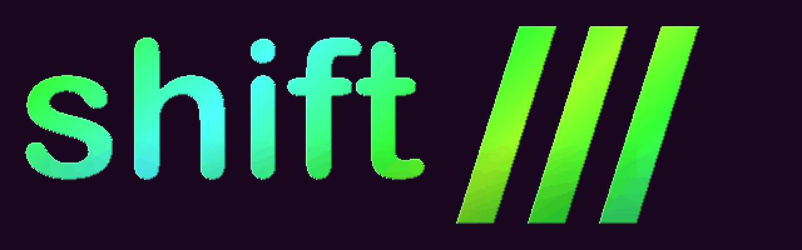

shift /// lab: generations
The wordmark in three generations, each honest to its era's grid and palette. Scroll the three pillars and the mark advances; keys 1, 2, 3 or the buttons jump. Reduced motion shows GEN 3 and skips the scroll.
GEN

Yours GEN 1
The agent file is Scheme you edit live; a validated change is the next generation, rollback is one command, and no live change grants a permission the runtime withheld.
Accountable GEN 2
Every turn ends in a receipt. Every session is a folder, subagents are folders under it, traces are searchable from any other session, and the judge's verdicts are logged with their confidence.
Compounding GEN 3
Workflows are procedures with checks. Field notes, reflection and distillation propose skills; improvement is kept only when two subagent runs say it won.